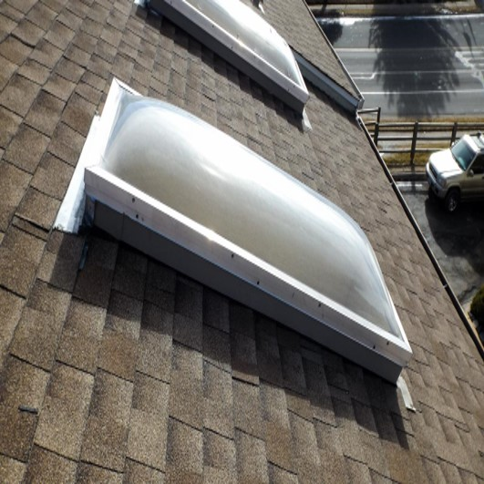
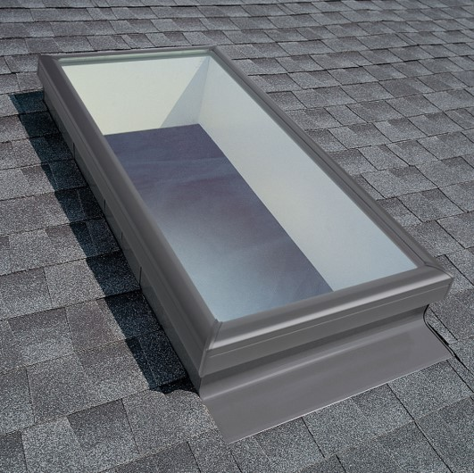

<div class="container mx-auto">
    <div class="flex flex-col items-center p-4">
      <h1 class="text-red-500 text-5xl font-bold p-4 text-center">
        Identifying Curb-Mount Skylights
      </h1>
      <p
        class="text-red-400 text-3xl font-medium tracking-wide leading-snug text-center p-4"
      >
        This section will educate you on how to identify curb mount skylights and
        how to measure.
      </p>
  
      <h2 class="text-red-500 text-5xl font-bold p-4 text-center">
        Types of Curb-Mounted Skylights
      </h2>
      <section class="flex flex-col lg:flex lg:flex-row-reverse lg:justify-center ">
        <div class="basis-1/2 max-w-md rounded overflow-visible shadow-lg m-2">
          
          <div class="px-6 py-4">
            <div class="font-bold text-center text-xl mb-2">
              Arylic Curb Skylight
            </div>
            <p class="text-gray-700 text-base">
              A photo from this angle is the best angle to identify an arylic curb
              mounted skylight. You will want to look for the number of screws on
              the side of the skylight. An arylic curb mount will have two sets of
              screens, while a self-flashed arylic skylight will have only one set
              of screws.
            </p>
          </div>
          <div class="flex justify-center p-3">
            <button
              class="bg-red-500 hover:bg-red-700 text-white font-bold py-2 px-4 rounded-full"
              routerLink="/curbcal" routerLinkActive="active"
              
              >
              Measurement Calculator
            </button>
          </div>
        </div>
  
        <div class="basis-1/2 max-w-md rounded overflow-hidden shadow-lg m-2">
          
          <div class="px-6 py-4">
            <div class="font-bold text-center text-xl mb-2">
              Velux Curb-Mounted Skylight
            </div>
            <p class="text-gray-700 text-base">
              Velux Curb-Mounted Skylights will have a grey frame and have a
              rolled grey frame. Above photo is a great example of a Velux
              Curb-Mounted Skylight. There will also be a tag in the right corner
              of the glass that will say "Velux" on it.
            </p>
          </div>
          <div class="flex justify-center p-3">
            <button
              class="bg-red-500 hover:bg-red-700 text-white font-bold py-2 px-4 rounded-full md:mt-6 sm:mt-5 xs:mt-6"
              routerLink="/curbcal" routerLinkActive="active"
              
              >
              Measurement Calculator
            </button>
          </div>
        </div>
      </section>
      <div class="container mx-auto">
        <h2 class="text-red-500 text-5xl font-bold p-4 text-center">
          How to measure a curb-mounted skylight?
        </h2>
        <section class="flex flex-row-reverse justify-center">
          <div class="basis-1/2 max-w-xl rounded overflow-visible shadow-lg m-2">
            
            <div class="px-6 py-4">
              <div class="font-bold text-center text-xl mb-2">
                Measuring Curb-mounted Skylight
              </div>
              <p class="text-gray-700 text-base">
                The best measurement for a curb-mounted skylight is the outside
                curb dimension. In the above photo, the red lines is where you
                need to measure on the skylight. Measuring the frame of the
                skylight will result in an incorrect measurement.
              </p>
            </div>
            <div class="flex justify-center p-3">
              <button
                class="bg-red-500 hover:bg-red-700 text-white font-bold py-2 px-4 rounded-full"
                routerLink="/curbcal" routerLinkActive="active"
                >
                Measurement Calculator
              </button>
            </div>
          </div>
        </section>
      </div>
  
      <h2 class="text-red-500 text-5xl font-bold p-4 text-center">
        Velux Curb-Mount Skylight standard sizes
      </h2>
      <div class="flex flex-col">
        <table
          class="border-separate border table-auto border-slate-400 lg:p-10 md:p-4"
        >
          <thead>
            <p class="text-red-500 text-lg font-bold text-center">Standard sizes of Velux Curb-Mounted skylights</p>
            <tr>
              <th class="border border-slate-300 ...">FCM Code Size</th>
              <th class="border border-slate-300 ...">Outside curb (W" x H")</th>
              <th class="border border-slate-300 ...">
                Maximum skylight clearance (W" x H")
              </th>
            </tr>
          </thead>
          <tbody>
            <tr *ngFor="let curbmount of curbMount">
              <td class="border border-slate-300 ...">
                {{ curbmount.sizeCode }}
              </td>
              <td class="border border-slate-300 ...">
                {{ curbmount.outsideCurbWidth }}" x
                {{ curbmount.outsideCurbHeight }}"
              </td>
              <td class="border border-slate-300 ...">
                {{ curbmount.maxSkyClearWidth}}" x
                {{ curbmount.maxSkyClearHeight }}"
              </td>
            </tr>
          </tbody>
        </table>
      </div>
    </div>
  </div>
  